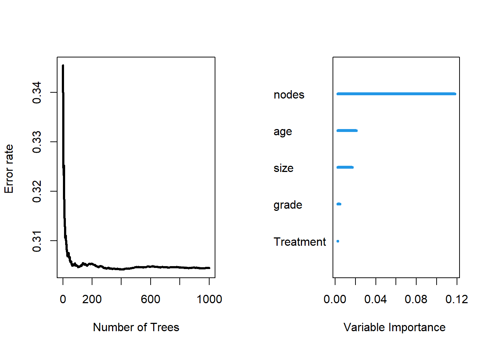

dtimeset.seed(453)
# Sample the data and create a training subset.
train <- sample(1:nrow(rotterdam), round(nrow(rotterdam) * 0.80))
# Train the model.
rotterdam.grow <- rfsrc(Surv(dtime, death) ~ Treatment + size + nodes + age + grade, rotterdam[train, ], ntree = 100)
# Test the model.
rotterdam.pred <- predict(rotterdam.grow, rotterdam[-train , ])
# Compare the results.
print(rotterdam.grow)## Sample size: 2386
## Number of deaths: 1022
## Number of trees: 100
## Forest terminal node size: 15
## Average no. of terminal nodes: 110.28
## No. of variables tried at each split: 3
## Total no. of variables: 5
## Resampling used to grow trees: swor
## Resample size used to grow trees: 1508
## Analysis: RSF
## Family: surv
## Splitting rule: logrank *random*
## Number of random split points: 10
## Error rate: 31.87%## Sample size of test (predict) data: 596
## Number of deaths in test data: 250
## Number of grow trees: 100
## Average no. of grow terminal nodes: 110.28
## Total no. of grow variables: 5
## Resampling used to grow trees: swor
## Resample size used to grow trees: 377
## Analysis: RSF
## Family: surv
## Test set error rate: 27.43%As we can see from the RSF result, our test set error rate is 27.43%, which is not very ideal.

##
## Importance Relative Imp
## nodes 0.1178 1.0000
## age 0.0209 0.1771
## size 0.0168 0.1423
## grade 0.0049 0.0412
## Treatment 0.0026 0.0223As we can see, in our fit of RSF, the most important variable is nodes and the second most important variable is age. Both variables are quantitative variables.